using TheoreticalComputerScienceTI-Summary
\[ \newcommand{\SIM}{\mathrm{SIM}} \newcommand{\LV}{\mathrm{LV}} \newcommand{\ZV}{\mathrm{ZV}} \newcommand{\ID}{\mathrm{ID}} \newcommand{\SUB}{\mathrm{SUB}} \newcommand{\PR}{\mathrm{PR}} \newcommand{\MIN}{\mathrm{MIN}} \newcommand{\pmd}{\mathrm{md}} \newcommand{\psum}{\mathrm{sum}} \newcommand{\pprod}{\mathrm{prod}} \newcommand{\pdiv}{\mathrm{div}} \newcommand{\pexp}{\mathrm{exp}} \]
About
Disclaimer: Diese Zusammenfassung ist nicht als Ersatz für die Vorlesung oder die Übung gedacht, sondern soll lediglich als Ergänzung dienen. Es ist möglich, dass Fehler enthalten sind. Bitte überprüft die Zusammenfassung sorgfältig und meldet eventuelle Fehler oder Unklarheiten an daniel.2.schwarzenbach@uni-konstanz.de
Für Theoretische Informatik gibt es ein Julia-Package, das die meisten der in der Vorlesung behandelten Konzepte implementiert.
Install Julia: https://julialang.org/downloads/
Github Repo: https://github.com/daniel-schwarzenbach/TheoreticalComputerScience.jl
Es ist auf GitHub verfügbar und kann mit dem folgenden Befehl installiert werden:
using Pkg
Pkg.add(url="https://github.com/daniel-schwarzenbach/TheoreticalComputerScience.jl")um es zu verwenden, können Sie es einfach importieren:
References
Aufbauend auf der Vorlesung von Prof. Dr. Sven Kosub, Konstanz, Sommersemester 2026.
Kahoot!
Für die Übungen erstelle ich Kahoot!-Quizzes, um die wichtigsten Konzepte zu überprüfen.
Kahoot Nr.1
- Wörter
- Sprachen
- Codierungen
- Hüllen Operatoren
Kahoot Nr.2
- RAM
- Algebraische Erzeugung von Funktionen
- \(\textbf{FUNK}\)
https://create.kahoot.it/share/ti2-funk-ram/02b7c3d5-3dbd-4e3c-b125-6b22cc196de0
Kahoot Nr.3
- Turingmaschinen
https://create.kahoot.it/share/ti3-turingmaschinen/ca3dc653-d9e9-416c-a3d8-b2d38bec5482
Kahoot Nr.4
- Turingmaschinen (wiederholung)
- Algebraische Erzeugung von Funktionen (wiederholung)
- Partiell rekursive Funktionen
https://create.kahoot.it/share/ti4-prim/b51cccae-b85e-45aa-ae69-befbd21aa05c
Kahoot Nr.5
- PRIM
https://create.kahoot.it/share/ti5-part/5b801a03-7b3e-41c9-89bf-3616bd8624d6
Kahoot Nr.6
- Entscheidbarkeit
- Aufzählbarkeit
https://create.kahoot.it/share/ti6/e0764dd0-19e0-4698-b97c-04ebcf5dfe1c
Kahoot Nr.7
- Unentscheidbare Mengen
- many-to-one Reduktion
- Satz von Rice
Mathematische Grundlagen
Wörter und Sprachen
Sei \(Σ\) eine endliche nichtleere Menge von Zeichen/Characters
- \(Σ\) heißt Alphabet
- Elemente von \(Σ\) heißen Symbole, Buchstaben, Zeichen
- ein Wort x(über \(Σ\)) ist eine endliche Aneinanderreihung von Buchstaben
- \(|x|\) bezeichnet Länge von \(x\)
- \(|x|ₐ\) bezeichnet die Anzahl des Vorkommens von \(a ∈ Σ\) in \(x\)
- \(ε\) ist das leere Wort
- \(Σ^*\) ist die Menge aller Wörter über \(Σ\)
- \(Σ^+\) := \(Σ^* ∖ \{ε\}\)
- Eine Menge \(L ⊆ Σ^*\) heisst formale Sprache über \(Σ\)
Beispiel:
- \(Σ = \{a, b\}\), \(x = aababb\), \(|x| = 6\), \(|x|_a = 3\), \(|x|_b = 3\)
Operationen auf Wörtern
Seien \(x = a_1 ... a_n, \quad y = b_1 ... b_n\) zwei Wörter
- Konkatenation: \(xy = a_1a_2...a_nb_1b_2...b_n\)
- Spiegelwort: \(x^R = a_na_{n-1}...a_1\)
- Potenz: \(x^0 = ε\), \(x^k = x^{k-1}x\)
Beispiel:
- \(Σ = \{a, b\}\), \(x = aababb\), \(y = ab\), \(xy = aababbab\), \(x^R = bbabaa\), \(x^3 = aababbaababbaababb\)
Operationen auf Sprachen
- konkatenation: \(L⋅L' = \{xy ∣ x ∈ L, y ∈ L'\}\)
- iteration
- \(L^0 = \{ε\}\)
- \(L^k = L^{k-1}L\)
- \(L^* = ⋃_{k ∈ ℕ} L^k\)
- \(L^+ = ⋃_{k ∈ ℕ₊} L^k\)
Insbesondere gilt: \(\{x\}^k = \{x^k\} \quad ∀x ∈ Σ^*, \; k ≥ 0\)
Beispiel:
- \(Σ = \{a, b\}\), \(L = \{a, ab\}\), \(L^2 = \{aa, aab, aba, abab\}\), \(L^* = \{ε, a, ab, aa, aab, aba, abab,...\}\)
Kodierung von Zahlen
Unär
- \(\text{un} : ℕ → \{a\}^*\)
- \(n ↦ a^ⁿ\)
- ist bijektiv
- \(\text{un}(5) = \textit{IIIII}\)
Dezimal
- \(\text{dec}: ℕ → \{\textit{0,1,...,9}\}^*\)
- \(\text{dec}(0) = \textit{0}\)
- \(\text{dec}(n) = a_ma_{m-1}...a_1a_0\)
- \(\text{dec}\) ist injektiv aber nicht surjektiv
\(\text{dec}(18) = \textit{18}\)
Binär
- \(\text{bin}: ℕ → \{\textit{0,1}\}^*\)
- \(\text{bin}(0) = 0\)
- \(\text{bin}(n) = a_ma_{m-1}...a_1a_0\)
- \(\text{bin}\) ist injektiv aber nicht surjektiv
\(\text{bin}(18) = \textit{1'0010}\)
k-adisch
- \(\text{ad}_k: ℕ → \{\textit{1,...,k}\}^*\)
- \(\text{ad}_k(0) = ε\)
- \(\text{ad}_k(n) = a_ma_{m-1}...a_1a_0\)
- \(\text{ad}_k\) ist bijektiv
Dyadische Codierung
dyadisch: \(\text{dya} := \text{ad}_2\)
| dec(n) | dya(n) | bin(n) | \(\text{ad}_3(n)\) |
|---|---|---|---|
| 0 | ε | 0 | ε |
| 1 | 1 | 1 | 1 |
| 2 | 2 | 10 | 2 |
| 3 | 11 | 11 | 3 |
| 4 | 12 | 100 | 11 |
| 5 | 21 | 101 | 12 |
| 6 | 22 | 110 | 13 |
| 7 | 111 | 111 | 21 |
| 8 | 112 | 1000 | 22 |
Die dyadische Kodierung natürlicher Zahlen ist die wie folgt rekursiv definierte, bijektive Abbildung \(\text{dya}: ℕ → \{\textit{1,2}\}^*\):
\[ \text{dya}(n) = \begin{cases} ε & \text{falls } n = 0 \\ \text{dya}(\frac{n-2}{2}) \textit{2} & \text{falls } n > 0 \text{ und gerade} \\ \text{dya}(\frac{n-2}{2}) \textit{1} & \text{falls } n \text{ ungerade} \\ \end{cases} \]
Die Umkehrfunktion \(\text{dya}^{-1} : \{\textit{1,2}\}^* → ℕ\) ist wie folgt definiert:
\[ \text{dya}^{-1}(a_{n-1}, ..., a_{0}) = \sum_{i = 0}^{n} a_i ⋅ 2^i \]
Anmerkung:
\[ \text{dya}(2^n - 1) = {\textit{1}}^n = \text{bin}(2^n - 1) \]
Als julia-Funktion könnte die dyadische Kodierung wie folgt implementiert werden:
function dya(n::Integer)::String
if n == 0
return ""
elseif n % 2 == 0
return dya((n-2) ÷ 2) * "2"
else
return dya((n-1) ÷ 2) * "1"
end
endfunction dya⁻¹(str::String)::Integer
n = 0 # resultat
i = 0 # laufindex
for c ∈ reverse(str)
if c == '1'
n += 2^i
elseif c == '2'
n += 2 * 2^i
end
i += 1
end
return n
end
Note
Das TheoreticalComputerScience.jl Package enthält Implementierungen der dyadischen Kodierung.
@show dya⁻¹("11211")
@show dya⁻¹("2222212122")
@show dya(420)
nothing # remove outputdya⁻¹("11211") = 35
dya⁻¹("2222212122") = 2026
dya(420) = "21211212"Hüllenoperator
Sei A eine Menge. Eine totale Funktion \(Γ:\mathcal{P}(A) → \mathcal{P}(A)\) heißt Hüllenoperator über A, falls folgende Bedingungen gelten:
- Einbettung: \(B ⊆ Γ(B)\) für alle \(B ⊆ A\)
- Monotonie: \(B ⊆ C ⇒ Γ(B) ⊆ Γ(C)\) für alle \(B,C ⊆ A\)
- Abgeschlossenheit: \(Γ(Γ(B)) ⊆ Γ(B)\)
Beispiel:
Für \(A = ℕ\) und \(|\)(Teilbarkeit) ist \(Γ(B) = \{n ∣ \text{es gibt } m ∈ B \text{ mit } n|m\}\) ein Hüllenoperator. Insbesondere gilt:
- \(Γ(\{ 0 \}) = ℕ\)
- \(Γ(\{24\}) = \{1,2,3,4,6,12,24\}\)
- \(Γ(\{13\}) = \{1, 13\}\)
Ein Hüllenoperator \(Γ: \mathcal{P}(A) → \mathcal{P}(A)\) heißt algebraisch, falls gilt:
Für alle \(B ⊆ A\) und für alle \(b ∈ Γ(B)\) gibt es endliches \(B_0 ⊆ B\) mit \(b ∈ Γ(B_0)\)
Beispiel:
Definiere \(Γ:\mathcal{P}(ℕ) → \mathcal{P}(ℕ)\) wie folgt:
\[ Γ(B) = \begin{cases} B & \text{falls } |B| < \infty \\ ℕ & \text{sonst} \end{cases} \]
Dann ist \(Γ\) ein Hüllenoperator. Es gilt \(Γ(ℕ_+) = ℕ, \; 0 ∈ Γ(ℕ_+)\)
aber: \(0 ∉ Γ(B_0) = B_0\) für endliche \(B_0 ⊆ ℕ_+\)
Abgeschlossenheit unter Operation \(O\)
Ein Funktion \(O: A^s → A\) heißt \(s\)-stellige Operation auf \(A\).
Sei \(O: A^s → A\) eine \(s\)-stellige Operation auf \(A\). Eine Menge \(C ⊆ A\) heißt abgeschlossen unter \(O\) falls gilt: \[a_1,...,a_s ∈ C \quad ⇒ \quad O(a_1,...,a_s) ∈ C\]
Seien \(O_i: A^{s_i} → A\) für \(i ∈ \{1,...,k\}\) Operationen auf \(A\), \(B ⊆ A\). Dann ist \(Γ_{O_1,...,O_k}(B)\) die kleinste Menge, die \(B ⊆ A\) enthält und abgeschlossen ist unter \(O_1,...,O_k\) d.h.
\[Γ_{O_1,..,O_k} (B) = ⋂ \{C ∣ B ⊆ C, \; C \text{ abgeschlossen unter } O_1, ..., O_k\}\] \(Γ_{O_1,..,O_k}\) heisst der durch \(O_1,...,O_k\) erzeugte Hüllenoperator.
Beispiel:
- \(Γ_{\text{sum}}(\{1\}) = ℕ_+\) da \(1+1=2, 1+2=3, 2+2=4,...\)
- \(Γ_{\text{prod}}(\{1\}) = \{1\}\) da \(1⋅1=1\)
- \(Γ_{\text{sum,prod}}(\{2, 3\}) = \{x∈ℕ ∣ x = 2^a ⋅ 3^b \text{ mit } a+b ≥ 1\}\)
Anmerkung:
\(Γ_{O_1,..,O_k}\) ist ein algebraischer Hüllenoperator.
Beispiel für einen Hüllenoperator: Hasse-Diagramm
Betrachten Sie den folgenden gerichteten Graphen \(([6], R_0)\) der das Hasse-Diagramm einer Halbordnung \(⪯_a\) darstellt:

Es gilt nun: \(1 ⪯_a 6\), \(2 \not ⪯_a 4\) und \(3 ⪯_a 3\).
Ein Hasse-Diagramm enthält bereits die komplette Information über die Halbordnung. Mithin ist die Halbordnung \(⪯_a\) gegeben durch die Reflexive und Transitive Hülle der Relation \(R_0\). Das heißt, \[ Γ_{\text{reflexiv, transitiv}}(R_0) \; = \; ⪯_a \]
Der Grund warum wir für Halbordnungen Hasse-Diagramme angeben ist, dass sie viel kleiner und lesbarer sind als einer Graph einer Halbordnung.
Man betrachte den Graphen \(([6], Γ_{\text{reflexiv, transitiv}}(R_0))\):

Algebraische Erzeugung von Funktionen
Operationen auf \(ℕ\)
Wir definieren die folgenden Operatoren \(ℕ²\to ℕ\):
\[\text{sum}(x,y) = x+y\]
\[ \text{md}(x,y) = x ∸ y = \begin{cases} x-y & \text{falls } x > y \\ 0 & \text{sonst} \end{cases} \]
\[\text{prod}(x,y) = x⋅y\]
\[\text{div}(x,y) = \begin{cases} \left\lfloor \frac{x}{y} \right\rfloor & \text{ falls } y > 0 \\ x & \text{ falls } y = 0 \end{cases} \]
\[\exp(x,y) = x^y\]
Weitere Operationen die wir definieren sind:
- Increment:
- \(\text{S}: ℕ → ℕ\)
- \(\text{S}(x) = x + 1\)
- Projektion/Identität:
- \(\text{I}^n_i: ℕ^n → ℕ\)
- \(\text{I}^n_i(x_1, ..., x_n) = x_i\)
- Konstante:
- \(\text{C}^n_c: ℕ^n → ℕ\)
- \(\text{C}^n_c(x_1, ..., x_n) = c\)
Operatoren auf \(\textbf{FUNK}(A)\)
Sei A eine beliebige Menge. Definiere dann die Menge der Operationen auf A als: \[\textbf{FUNK}(A) := \{φ ∣ ∃ n∈ℕ \text{ mit } φ: A^n → A\}\]
\(\textbf{FUNK}(ℕ)\) ist für die Theoretische Informatik von fundamentaler Bedeutung. Unter anderem ist \(\textbf{TM} ⊆ \textbf{FUNK}(ℕ)\).
Es seien \(φ: A^n → A, \; ψ:A^m → A \quad \in \textbf{FUNK}(A)\)
- zyklische Vertauschung:
- \(\text{ZV}(φ): A^n → A\)
- \(\text{ZV}(φ)(x_1,...,x_n) = φ(x_2,...,x_n,x_1)\)
- vertauschung der letzten Variable:
- \(\text{LV}(φ): A^n → A\)
- \(\text{LV}(φ)(x_1,...,x_n) = φ(x_1,...,x_{n-2},x_n,x_{n-1})\)
- Identifikation der letzten Variablen:
- \(\text{ID}(φ): A^{n-1} → A\)
- \(\text{ID}(φ)(x_1,...,x_{n-1}) = φ(x_1,...,x_{n-1},x_{n-1})\)
- Substitution an letzter Stelle:
- \(\text{SUB}(φ, ψ): A^{n-1+m} → A\)
- \(\text{SUB}(φ, ψ)(x_1,...,x_{n-1},y_1,...,y_m) = φ(x_1,...,x_{n-1}, ψ(y_1,...,y_m))\)
Beispiel:
\[ \begin{aligned} \text{ID}(\text{ZV}(\text{ZV}(\text{SUB}(\text{sum},\text{md})))) (x,y) & = \text{ZV}(\text{ZV}(\text{SUB}(\text{sum},\text{md}))) (x,y,y) \\ & = \text{ZV}(\text{SUB}(\text{sum},\text{md})) (y,y,x) \\ & = \text{SUB}(\text{sum},\text{md}) (y,x,y) \\ & = \text{sum}(y,\text{md}(x,y)) \\ & = y + (x ∸ y) \\ & = \max\{x,y\} \end{aligned} \]
mithin gilt dann:
\[ \max ∈ Γ_{\text{ZV}, \text{ID}, \text{SUB}}(\{\text{sum}, \text{md}\}) \]
Sei \(A ⊆ ℕ\) und \(ψ,φ,ρ_1,...,ρ_n ∈ \textbf{FUNK}(A)\).
\(ψ\) ist durch Permutation der Variablen aus \(φ\) erzeugt, falls eine permutation \(π\) existiert mit \[ ψ(x_1,...,x_n) = φ(x_{π(1)},...,x_{π(n)}) \]
\(ψ\) ist durch Identifikation von Variablen aus \(φ\) erzeugt, falls \(i,j\) mit \(1≤i≤j≤n\) gibt, mit \[ ψ(x_1,...,x_{j-1},x_{j+1},...,x_n) = φ(x_1,...,x_{j-1},x_i,x_{j+1},...,x_n) \]
\(ψ\) ist durch simultane Substitution von \(ρ_1,...,ρ_n\) in \(φ\) erzeugt, falls \[ ψ(x_1,...,x_m) = φ(ρ_1(x_1,...,x_m), ..., ρ_n(x_1,...,x_m)) \]
Daraus definieren wir den Operator \(\SIM\):
\[ \SIM_n: (ℕ^n → ℕ) × (ℕ^m → ℕ)^n → (ℕ^m → ℕ) \]
\[ \text{SIM}_n(φ, ψ_1,...,ψ_n)(x_1, ..., x_m) = φ(ψ_1(x_1,...,x_m), ..., ψ_n(x_1,...,x_m)) \]
Ist die Funktion \(ψ\) durch Permutation der Variablen aus \(φ\) entstanden, so gilt: \(ψ ∈ Γ_{\text{ZV},\text{LV}}(\{φ\})\).
Ist die Funktion \(ψ\) durch Identifikation von Variablen aus \(φ\) entstanden, so gilt: \(ψ ∈ Γ_{\text{ID},\text{ZV},\text{LV}}(\{φ\})\).
Ist die Funktion \(ψ\) durch simultane Substitution von \(\rho_1,...,\rho_n\) in \(φ\) erzeugt, so gilt: \(ψ ∈ Γ_{\text{SUB},\text{ZV},\text{ID},\text{LV}}(\{φ,\rho_1,...,\rho_n\})\).
Algorithmentheorie
Random-Access-Maschinen
- Die Steuereinheit enthält das Programm und führt es aus. Ein Programm besteht aus einer endlichen Liste von nummerierten Befehlen.
- Das Befehlsregister enthält die Nummer des aktuellen Befehls im Programm.
- Jedes der unendlich vielen (Daten-)Register
R0, R1, R2, ...enthält eine natürliche Zahl (gespeichert in dyadischer Darstellung). Die Nummerivon RegisterRiheißt Adresse.
Bezeichnungen:
<Ri> # inhalt von Ri, d.h. R[i]
<BR> # inhalt von BR ≃ *BR
<R> := x # Register R bekommt neuen Inhalt x, dh Befehle, Wirkung
# Transportbefehle
Ri ← Rj # <Ri> := <Rj>
Ri ← RRj # <Ri> := <R<Rj>>
RRi ← Rj # R[R[i]] := R[j]
# Arithmetische Befehle
Ri ← k # R[i] = k
Ri ← Rj + Rk # R[i] = R[j] + R[k]
Ri ← Rj - Rk # R[i] = R[j] - R[k]
# Sprungbefehle
IF Rj = 0 THEN GOTO x # falls <Rj> = 0, dann gehe zu Befehl mit Nummer x
IF Rj > 0 THEN GOTO x # falls <Rj> > 0, dann gehe zu Befehl mit Nummer x
GOTO x # gehe zu Befehl mit Nummer x
RAM-Emulieren
z.B. Die Funktion \(f(x,y,z) = x + y - z\) könnte durch folgendes RAM-Programm berechnet werden:
./test.ram:
# f(x,y,z) = x + y - z
# R0 = x, R1 = y, R2 = z
0 R0 ← R0 + R1
1 R0 ← R0 - R2
2 STOPWir können ein RAM-Programm mit dem Julia-Package TheoreticalComputerScience.jl ausführen:
# Make sure to set all registers needed by the RAM program
set_registers!([9, 2, 8])
# Execute the RAM program
execute_ramfile("./test.ram")R = [9, 2, 8]
0: R0 ← R0 + R1 ⟹ R = [11, 2, 8]
1: R0 ← R0 - R2 ⟹ R = [3, 2, 8]
2: STOP ⟹ Final register state: [3, 2, 8]
Alternativ kann das RAM-Programm auch direkt in Julia eingeben:
set_registers!([8, 4, 11])
execute_ramcode([
# f(x,y,z) = x + y - z
"R0 <- R0 + R1", # 0
"R0 ← R0 - R2", # 1
"STOP" # 2
])R = [8, 4, 11]
0: R0 <- R0 + R1 ⟹ R = [12, 4, 11]
1: R0 <- R0 - R2 ⟹ R = [1, 4, 11]
2: STOP ⟹ Final register state: [1, 4, 11]
Höhere Programmiersprachen
\(\textbf{RAM} ⊆ \textbf{Julia}\), schliesslich können wir ja auch RAM code in Julia emulieren.
Aber es gilt auch \(\textbf{Julia} ⊆ \textbf{RAM}\). Julia wird explizit compiliert in x64 Assembler, was dann in ein RAM-Programm übersetzt werden kann, d.h. es gibt einen Algorithmus, der jedes Julia-Programm in ein RAM-Programm übersetzt.
ergo: Julia ist Turing-vollständig.
Turingmaschinen
Definition: Turingmaschinen
Eine Turingmaschine mit \(k\)-Bändern ist ein Tupel \(M = (Σ, Z, f, z₀, z_1)\) bestehend aus:
- einem Bandalphabet \(Σ\),
- eine Menge von Zuständen \(Z\),
- einer Überführungsfunktion \(f : Z × Σ^k \; → \; Z × Σ^k × \{L, 0, R\}^k\),
- einem Startzustand \(z₀ ∈ Z\),
- einem Endzustand \(z_1 ∈ Z\).
Eine Turingmaschine besteht aus folgenden Komponenten:
- \(k\) (mit \(k ≥ 1\)) beidseitig unendliche, in Zellen unterteilte Bänder; in jeder Zelle steht genau ein Symbol aus dem Bandalphabet \(Σ\), wobei das Leerzeichen \(□ ∈ Σ\) zeigt an, dass in der Zelle eigentlich nichts steht
- für jedes Band ein Schreib- und Lesekopf (oder kurz einfach Kopf), der sich von Zelle zu Zelle bewegen kann, um Inhalte der Zellen zu lesen und zu verändern
- eine Steuereinheit, die sich in einem Zustand \(z\) aus einer endlichen Zustandsmenge \(Z\) befindet, die über die Köpfe Bandinhalte liest und die Aktivitäten entsprechend steuert
das Verhalten pro Takt wird durch eine (totale) Überführungsfunktion: \[ f : Z × Σ^k \quad → \quad Z × Σ^k × \{L, 0, R\}^k \] beschrieben; die Beschreibung ist unabhängig von Taktnummer und Kopfpositionen.
Definition: Turing-Berechenbarkeit
- Seien \(M = (Σ, Z, f, z_0, z_1)\) eine Turingmaschine, \(Σ_1 ⊆ Σ ∖ \{□,*\}, Σ_2 ⊆ Σ ∖ \{□\}, n ∈ N\). Eine Funktion \(ψ : (Σ^∗_1)^n → Σ^∗_2\) heißt von der Turingmaschine \(M\) berechnet, falls für alle \(x_1, ... , x_n ∈ Σ^*_1\) gilt:
Ist \(ψ(x_1, ... , x_n)\) definiert, so gilt: Startet \(M\) in \(S(z_0, x_1 ∗ x_2 ∗ ··· ∗ x_n)\), so stoppt \(M\) in \(S(z_1, ψ(x_1, ..., x_n))\).
Ist \(ψ(x_1, ... , x_n)\) nicht definiert, so gilt: Startet \(M\) in \(S(z_0, x_1∗x_2∗···∗x_n)\), so stoppt \(M\) nicht oder \(M\) stoppt aber nicht in einer Situation der Form \(S(z_1, y)\) mit \(y ∈ (Σ ∖ \{□\})^*\).
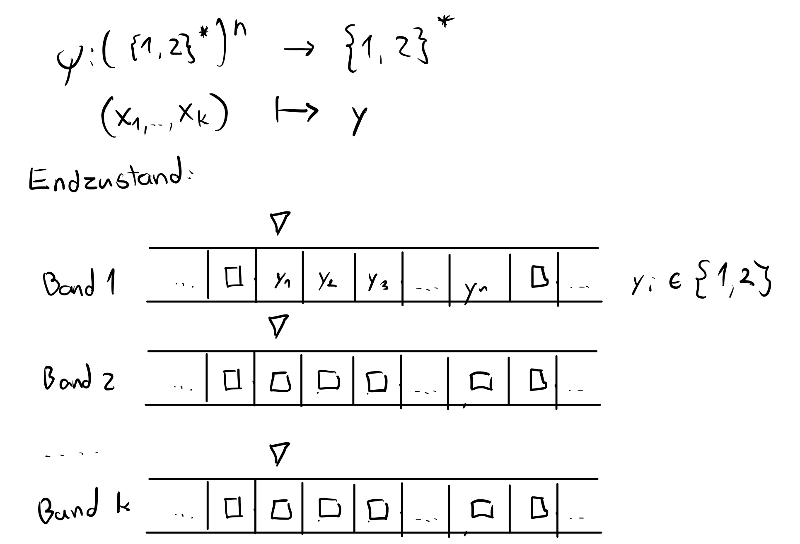
Eine Funktion \(ψ : (Σ^*_1)^n → Σ^*_2\) heißt Turing-berechenbar, falls es eine Turingmaschine gibt, die \(ψ\) berechnet.
Eine Funktion \(φ : ℕ^n → ℕ\) heißt Turing-berechenbar, falls sie in dyadischer Kodierung Turing-berechenbar ist, d.h. falls die durch \(ψ(x_1, ... , x_n) = \text{dya}(φ(\text{dya}^{-1}(x_1), ..., \text{dya}^{-1}(x_n)))\) definierte Funktion \(ψ : (\{1, 2\}^∗)^n → \{1, 2\}^*\) Turing-berechenbar ist.
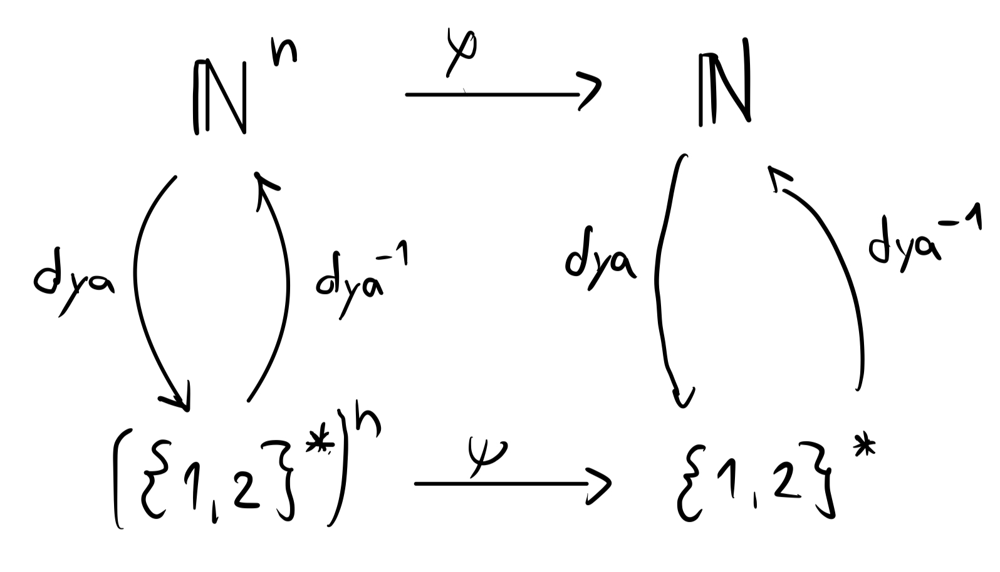
- Dazu definieren wir die Menge/Klasse \(\textbf{TM}\) der Turing-berechenbaren Funktionen als: \[ \textbf{TM} = \{ φ \mid φ : ℕ^n → ℕ \text{ ist Turing-berechenbar} \} \]
Definition: 1-Turingmaschine
Eine 1-Turingmaschine ist eine Turingmaschine mit nur einem Halb-Band. Also \(M_1 = (Σ, Z, f, z₀, z_1)\). Die Überführungsfunktion hat dann die Form:
\[ f : Z × Σ \quad → \quad Z × Σ × \{L, 0, R\} \]
Turing-Maschinen-Emulieren
Das TheoreticalComputerScience Paket enthält auch eine Implementierung von Turing Maschinen mit \(k\) Bändern:
no_bands: The number of bands.initial_state: The initial state.final_state: The final state.f:Tuple{String, Vector{Char}} => Tuple{String, Vector{Char}, Vector{Movement}}
□: Represents the blank symbol. Written with \Box
M = TMK(no_bands = 2, initial_state = "z0", final_state = "z1", f = Dict([
#z0
("z0", ['a','□']) => ("z0", ['a','a'], [:R, :R]),
("z0", ['b','□']) => ("z0", ['b','b'], [:R, :R]),
("z0", ['□','□']) => ("z2", ['□','□'], [:O, :L]),
# z2
("z2", ['□','b']) => ("z2", ['b','□'], [:R, :L]),
("z2", ['□','a']) => ("z2", ['a','□'], [:R, :L]),
("z2", ['□','□']) => ("z3", ['□','□'], [:L, :O]),
# z3
("z3", ['a','□']) => ("z3", ['a','□'], [:L, :O]),
("z3", ['b','□']) => ("z3", ['b','□'], [:L, :O]),
("z3", ['□','□']) => ("z1", ['□','□'], [:R, :O])
])
)um die Maschiene auszuführen, können Sie die execute_tm Funktion verwenden:
execute_tm(M, "abb")Die Maschiene wird dann schritt für Schritt ausgeführt, bis der Endzustand erreicht ist.
abb
↑
□□□
↑
⤷ f(z0,['a', '□']) ⟶ (z0, ['a', 'a'], [R, R])
abb
↑
a□□
↑
⤷ f(z0,['b', '□']) ⟶ (z0, ['b', 'b'], [R, R])
... (continues until the final state is reached)Turingmaschienen mit nur einem Band können genauso definiert werden:
initial_state: The initial state.final_state: The final state.f:Tuple{String, Char} => Tuple{String, Char, Movement}
□: Represents the blank symbol. Written with \Box
M = TM1(initial_state = "z0", final_state = "z1", f = Dict([
("z0", 'a') => ("za", '□', :R),
("z0", '□') => ("z1", '□', :R),
("z0", 'b') => ("zb", 'b', :R),
("za", 'a') => ("za", 'a', :R),
("za", 'b') => ("za", 'b', :R),
("za", '□') => ("z´", 'a', :L),
("zb", 'a') => ("za", 'a', :R),
("zb", 'b') => ("za", 'b', :R),
("zb", '□') => ("z´", 'b', :L),
("z´", '□') => ("z1", '□', :R),
("z´", 'a') => ("z´", 'a', :L),
("z´", 'b') => ("z´", 'b', :L)
])
)Sie können diese dann mit der execute_tm Funktion ausführen oder mit der execute_1tm Funktion, je nachdem ob es sich um eine 2-∞-sided Band Turingmaschine oder eine right-∞-sided Band Turingmaschine handelt:
# two-∞-sided Band
execute_tm(M, "abbabba")
# right-∞-sided Band
execute_1tm(M, "abbabba")Partiell-rekursive Funktionen
Note
Das TheoreticalComputerScience Paket enthält auch eine Implementierung von partiell-rekursiven Funktionen:
https://github.com/daniel-schwarzenbach/TheoreticalComputerScience.jl#partially-recursive-functions
# max(x, y)
@show ID(ZV(ZV(SUB(psum, md))))(10,9)
@show ID(ZV(ZV(SUB(psum, md))))(9,10)
# P(x) = 1 ∸ x
@show PR(C(0,0), I(2,1))(5)
# x ↦ ⌈√x⌉
@show MIN(SIM2(md, I(2,1), SIM2(pprod, I(2,2), I(2,2))))(10)output:
(ID(ZV(ZV(SUB(psum, md)))))(10, 9) = 10
(ID(ZV(ZV(SUB(psum, md)))))(9, 10) = 10
(PR(C(0, 0), I(2, 1)))(5) = 4
(MIN(SIM2(md, I(2, 1), SIM2(pprod, I(2, 2), I(2, 2)))))(10) = 4Definition: Primitive Rekursion
- Es seien \(φ : ℕ^n → ℕ\) und \(ψ : ℕ^{n+2} → ℕ\) Funktionen. Dann ist die Funktion \(\text{PR}(φ, ψ) : ℕ^{n+1} → ℕ\) definiert durch:
\[ \text{PR}(φ, ψ)(x_1,...,x_n,y) = \begin{cases} φ(x_1,...,x_n) & \text{falls }y = 0 \\ ψ(x_1,...,x_n,y-1,\text{PR}(φ, ψ)(x_1,...,x_n,y-1)) & \text{sonst} \end{cases} \]
\(\textbf{PRIM} = Γ_{\text{ZV},\text{ID},\text{SUB}, \text{LV}, \text{PR}}(\{\text{S}, \text{C}^0_0, \text{I}^2_1\})\).
Eine Funktion \(f : ℕ^n → ℕ\) heißt primitiv-rekursiv, falls \(f ∈ \textbf{PRIM}\).
Die Funktion \(I^n_m\), \(C^n_m\), sum, md, prod, div, exp, prim und prex sind alle primitiv-rekursiv.
Eine Funktion ist genau dann primitiv-rekursiv, wenn sie berechnet werden kann, ohne
- While Schleifen
- Funktionsaufrufe (rekursive)
Endliche For-Schleifen und streng nicht rekursive Funktionsaufrufe (nur einmal im Callstack) sind aber erlaubt
Methode zum Erstellen/Erkennen von primitiv-rekursiven Funktionen
Wir suchen eine Funktion \(f : ℕ^n → ℕ\) die primitiv-rekursiv ist, d.h. \(f ∈ \textbf{PRIM}\). Dafür starten wir mit dem Induktionsanfang (\(y=0\)) und finden ein passendes \(φ : ℕ^n → ℕ\) so dass gilt: \[ f(x_1,...,x_n,0) = φ(x_1,...,x_n) \]
und für den Induktionsschritt (\(y>0\)) finden wir eine Funktion \(ψ : ℕ^{n+2} → ℕ\) so dass gilt: \[ \begin{aligned} f(x_1,...,x_n,y) & = ψ(x_1,...,x_n,y-1,f(x_1,...,x_n,y-1)) \\ & = \text{PR}(φ, ψ)(x_1,...,x_n,y) ∈ \textbf{PRIM} \end{aligned} \] wobei die Induktionsvoraussetzung \(f(x_1,...,x_n,y-1) = \text{PR}(φ, ψ)(x_1,...,x_n,y-1)\) ist.
Die Akermann-Funktion \(A : ℕ^2 → ℕ\) ist nicht primitiv-rekursiv. aber in \(\textbf{TM}\). Somit gilt: \(\textbf{PRIM} \subsetneq \textbf{TM}\). \[ A(x,y) = \begin{cases} y+1 & \text{falls } x = 0 \\ x & \text{falls } y = 0 \text{ und } x > 0 \\ A(x-1, A(x, y-1)) & \text{falls } x > 0 \text{ und } y > 0 \end{cases} \]
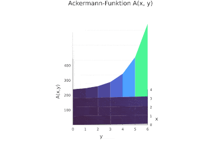
⚠️ Auf Wikipedia und in der Literatur ist sie manchmal etwas anders definiert.
Sei \(x ∈ ℕ\). Für die Akermann-Funktion \(A: ℕ^2 → ℕ\) gilt:
- \(y < A(x,y) \quad ∀ y ∈ ℕ\)
- \(A(x,y) < A(x,y+1) \quad ∀ y ∈ ℕ\)
- \(A(x,y) < A(x+1,y) \quad ∀ y ∈ ℕ\)
- \((∃z ∈ ℕ, ∀y ∈ ℕ_+)\left[A(x,y) < A(z,y-1)\right]\)
- \(A(x,2y) < A(x+3,y) \quad ∀ y ∈ ℕ\)
Sei \(f:ℕ → ℕ\) eine primitiv-rekursive Funktion mit \(n ∈ ℕ_+\). Dann gibt es ein \(x ∈ ℕ\), sodass für alle \(y_1, ..., y_n ∈ ℕ\) gilt:
\[ f(y_1,...,y_n) < A(x,y_1 + ... + y_n) \]
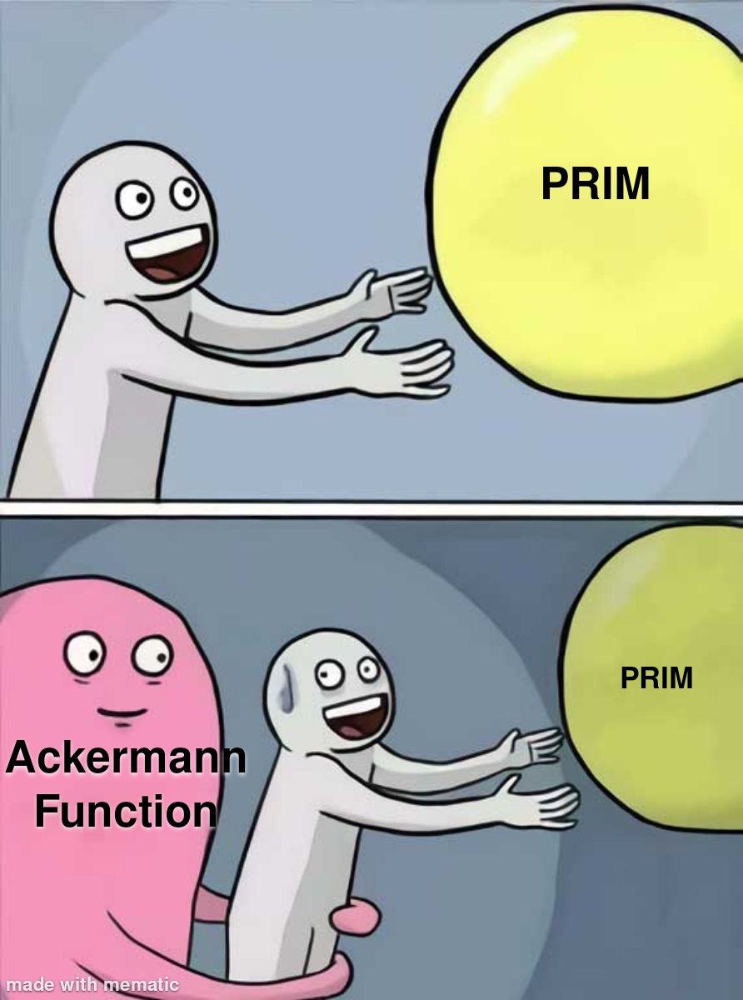
Definition: μ-Rekursion
\(μx(E(x)) = \arg \min_{x ∈ ℕ} E(x)\), wobei \(E(x)\) eine Aussage über \(x\) ist. Also \(μx(E(x))\) ist die kleinste natürliche Zahl \(x\), für die \(E(x)\) wahr ist. Wenn es kein \(x\) gibt, für das \(E(x)\) wahr ist, dann ist \(μx(E(x))\) undefiniert.
Daher reden wir in der Theoretischen Informatik streng genommen von partiellen Funktionen von \(ℕ → ℕ\), also nur rechtseindeutige Relationen, die nicht links-total sein müssen.
Es seien \(φ : ℕ^{n} → ℕ\) eine Funktion. Dann ist die Funktion \(\text{MIN}(φ): ℕ^{n-1} → ℕ\) definiert durch: \[ \text{MIN}(φ)(x_1,...,x_{n-1}) = μy(φ(x_1,...,x_{n-1},y) = 0) \] falls es ein \(y ∈ ℕ\) gibt, für das \(φ(x_1,...,x_{n-1},y) = 0\) gilt, und undefiniert sonst.
\(\textbf{PART} = Γ_{\text{ZV},\text{ID},\text{SUB}, \text{LV}, \text{PR}, \text{MIN}}(\{\text{S}, \text{C}^0_0, \text{I}^2_1\})\).
Eine Funktion \(f : ℕ^n → ℕ\) heißt partiell-rekursiv, falls \(f ∈ \textbf{PART}\).
\[ \MIN(φ) \\ ⇔ \]
function MIN(φ::Function)
return function (args...)
y = 0
while φ(args..., y) != 0
y = y + 1
end
return y
end
endHauptsatz der Algorithmentheorie
\[ ⟹ \quad \textbf{TM} = \textbf{1-TM} = \textbf{RAM} = \textbf{Julia} = \textbf{PART} \]
Church These
Jede algorithmisch berechenbare Funktion ist Turing-berechenbar.
Definition: Turing-vollständig
Ein System ist Turing-vollständig, wenn es jede berechenbare Funktion berechnen kann – also alles, was eine universelle Turingmaschine berechnen kann.
Formal: Ein Berechnungsmodell \(M\) ist Turing-vollständig, wenn gilt:
\[\forall f \text{ (Turing-berechenbar)} \Rightarrow f \text{ ist in } M \text{ berechenbar}\]
- HTML(mit CSS) ist Turing-vollständig.
- Powerpoint ist Turing-vollständig.
- Minecraft ist Turing-vollständig.
- The Game of Life ist Turing-vollständig.
- Modernes SQL mit der Möglichkeit von rekursiven Abfragen ist Turing-vollständig.
- C++ templates sind Turing-vollständig.
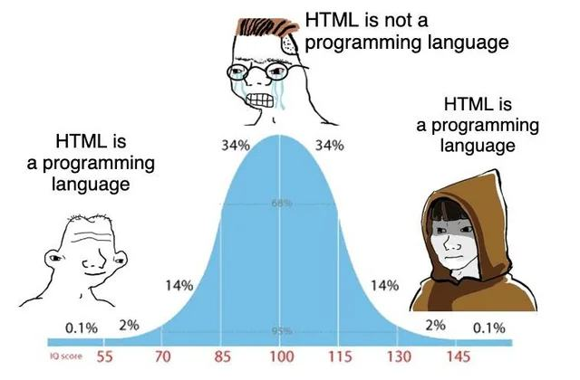
Berechenbarkeitstheorie
Entscheidbare Mengen
Definition: Entscheidbare Menge
Eine Menge \(A ⊆ ℕ^m\) heißt entscheidbar, falls die Charakteristische Funktion \(c_A\) berechenbar ist.
\[ c_A(x_1, ..., x_m) = \begin{cases} 1 & \text{falls } (x_1, ..., x_m) ∈ A \\ 0 & \text{falls } (x_1, ..., x_m) ∉ A \end{cases} \]
Bemerkung: Die Charakteristische Funktion \(c_A: ℕ^m → \{0,1\}\) ist eine totale Funktion, ergo muss ein Programm, das \(c_A\) berechnet, auf jeder Eingabe halten.
Seien \(A, B ⊆ ℕ^m\) mit \(m ∈ ℕ_+\).
\(A\) ist endlich \(\quad ⟹ \quad\) \(A\) ist entscheidbar.
\(A\) ist entscheidbar \(\quad ⟹ \quad\) \(\bar{A}\) ist entscheidbar.
\(A\) und \(B\) sind entscheidbar \(\quad ⟹ \quad\) \(A ∪ B\) und \(A ∩ B\) sind entscheidbar.
\(A\) ist entscheidbar und \(f:ℕ^n → ℕ^m\) berechenbar \(\quad ⟹ \quad\) \(f^{-1}(A)\) ist entscheidbar.
Definition: Aufzählbarkeit
\(Y ⊆ ℕ\) heißt aufzählbar, falls \(Y = ∅\) oder es eine berechenbare Funktion \(f:ℕ → ℕ\) gibt, mit \(\text{Bild}(f) = \text{Range}(f) = R_f = Y\).
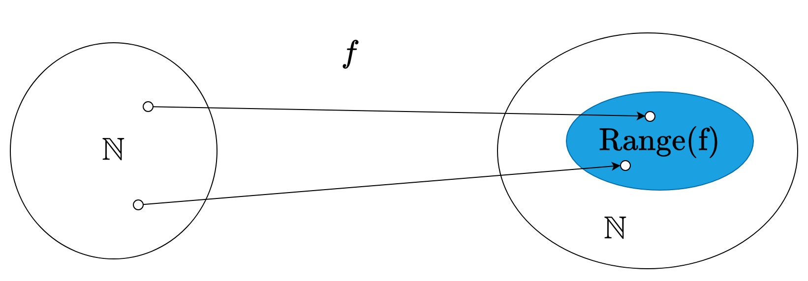
\(X ⊆ ℕ^n\) heißt aufzählbar, falls es eine bijektive, berechenbare Funktion \[c : ℕ^n → ℕ\] gibt, sodass die Menge \(Y = \{ c(x_1, ..., x_n) | (x_1, ..., x_n) ∈ X \} ⊆ ℕ\) aufzählbar ist.
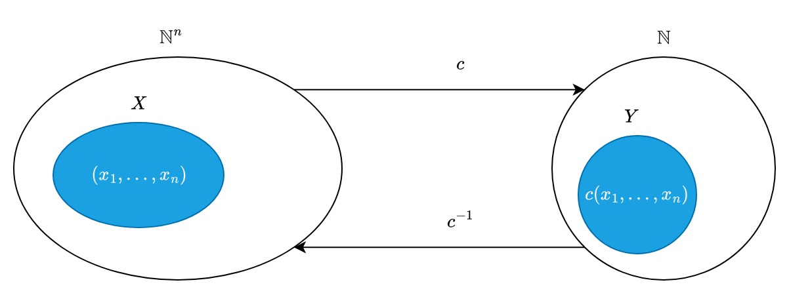
Die Menge der aufzählbaren Mengen nennen wir \(\textbf{RE}\) (recursively enumerable).
Die Menge der entscheidbaren Mengen nennen wir \(\textbf{R}\) (recursive).
Die Menge der deren Komplement aufzählbar ist, nennen wir \(\textbf{co-RE}\).
Eine Menge \(A ⊆ ℕ\) ist genau dann entscheidbar, wenn \(A\) und \(\overline{A}\) aufzählbar sind.
bzw.
\[ A \text{ ist entscheidbar} \quad ⇔ \quad A \in \textbf{RE} \; ∧ \; A \in \textbf{co-RE} \]
Damit ist die Menge der entscheidbaren Mengen genau \(\textbf{R} = \textbf{RE} \cap \textbf{co-RE}\).
Sei \(f : ℕ → ℕ\) berechenbar. Dann sind \(\text{Domain}(f)=D_f\) und \(\text{Range}(f) =R_f\) aufzählbar.
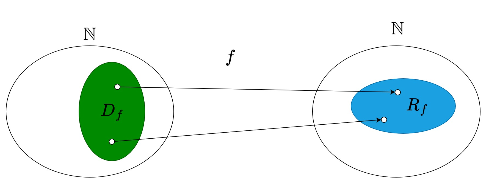
somit folgt, dass für eine beliebige Menge \(A ⊆ ℕ\) gilt:
\(A\) ist aufzählbar.
\(⇔\)
\(A\) ist Wertebereich einer einstelligen, berechnbaren Funktion.
\(⇔\)
\(A\) ist Definitionsbereich einer einstelligen, berechenbaren Funktion.
Sind \(A\) und \(B\) aufzählbar, so sind \(A ∪ B\) und \(A ∩ B\) aufzählbar.
Definition: Projektion
Für eine binäre Relation \(R ⊆ ℕ × ℕ\) definieren wir die Projektion von \(R\) als die Menge
\[ \text{Proj}(R) := \{ x ∈ ℕ \mid ∃y ∈ ℕ : (x, y) ∈ R \} \]
Projektionssatz
Es sei \(X ⊆ ℕ\). Dann ist \(X\) genau dann aufzählbar, wenn \(X\) Projektion einer binären entscheidbaren Relation \(R ⊆ ℕ × ℕ\) ist.
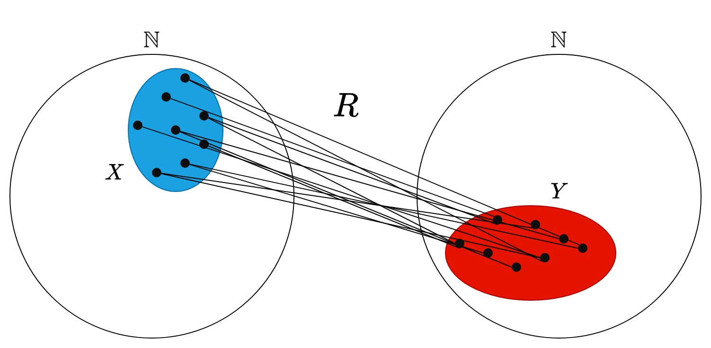
Propositionen zum Projektionssatz
- Jede Umkehrrelation einer entscheidbaren Relation ist entscheidbar.
Wir definieren die Projektion vom i-ten Argument einer n-ären Relation \(R ⊆ ℕ^n\) als die Menge \[ \text{Proj}_i(R) := \{ x_i ∈ ℕ \mid ∃x_1,...,x_{i-1},x_{i+1},...,x_n ∈ ℕ : (x_1,...,x_n) ∈ R \} \]
Mithin ist auch \(Y = \text{Proj}_2(R)\) aufzählbar, ergo gilt der Projektionssatz auch für das zweite Argument.
Sei \(R ⊆ ℕ^n\) eine entscheidbare Relation. Dann sind \(X_1 = \text{Proj}_1(R), ..., X_n = \text{Proj}_n(R)\) aufzählbar.
Unentscheidbare Mengen
Das Halteproblem
Wir können jedes RAM programm \(M_x\) als eine natürliche Zahl \(x\) kodieren.
| Symbol | R | G | I | → | + | - | = | ≠ |
|---|---|---|---|---|---|---|---|---|
| Kodierung | 111 | 112 | 121 | 122 | 211 | 212 | 221 | 222 |
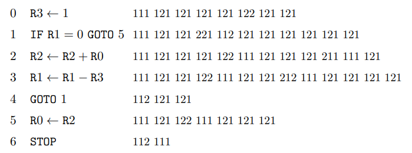
ist eine natürliche Zahl keine gültige RAM, so wird sie als STOP kodiert.
somit können wir jeder Natürlichen Zahl \(x\) eine RAM \(M_x\) zuordnen.
Diesen Vorgang nennt man auch Gödelisierung.
Das Halteproblem ist nicht nur für uns Informatiker ein fundamentales Problem, sondern auch für die Mathematik selbst, da es die Grenzen der Beweisbarkeit aufzeigt und zeigt das Mathematik kein abgeschlossenes System ist.
- Wichtige Stellen: 13:34 - 20:52 und 21:19 - 27:17
Das Hilbertsche Programm, initiiert von David Hilbert zu Beginn des 20. Jahrhunderts, war ein ehrgeiziger Versuch, die gesamte Mathematik auf ein sicheres, formales Fundament zu stellen. Es zielte darauf ab, die Grundlagenkrise der Mathematik zu lösen, indem die Mathematik in ein formales System überführt wird, für das drei Haupteigenschaften gefordert wurden:
Konsistenz (Widerspruchsfreiheit): In der Mathematik gibt es keine Aussage \(A\), so dass sowohl \(A\) als auch \(\neg A\) beweisbar sind.
Vollständigkeit: Für jede Aussage \(A\) in der Mathematik gilt: entweder \(A\) oder \(\neg A\) ist beweisbar.
Entscheidbarkeit: Gibt es ein Verfahren, um zu entscheiden, ob eine Aussage \(A\) aus den Axiomen eines formalen Systems beweisbar ist?
Proposition zu Hilberts Haupteigenschaften:
Es gibt kein formales System, das zeigen kann, dass die Mathematik konsistent ist, wenn sie tatsächlich konsistent ist.
Kein formales System, das die Mathematik beschreibt, ist vollständig.
Es gibt kein Verfahren, um zu entscheiden, ob eine Aussage \(A\) aus den Axiomen eines formalen Systems beweisbar ist.
Der Zusammenhang zwischen Entscheidbarkeit und Beweisbarkeit
1. Gödelisierung als Brücke
Durch Gödelisierung kann jede mathematische Aussage als natürliche Zahl kodiert werden. Damit entspricht:
\[A \subseteq \mathbb{N} \quad \Longleftrightarrow \quad \text{eine Menge von mathematischen Aussagen}\]
Die Frage „ist \(x \in A\)?” ist äquivalent zur mathematischen Frage „gilt Eigenschaft \(A\) für \(x\)?“.
2. Was bedeutet Entscheidbarkeit für Beweisbarkeit?
\[A \text{ ist entscheidbar} \quad \Longleftrightarrow \quad \forall x \in \mathbb{N}: \text{ entweder „}x \in A\text{" oder „}x \notin A\text{" ist beweisbar}\]
- Ein Algorithmus, der \(A\) entscheidet, liefert implizit für jede Instanz einen Beweis - entweder einen positiven oder einen negativen.
- Unentscheidbarkeit heißt: es gibt Aussagen, die weder beweisbar noch widerlegbar sind.
Definition: spezielles Halteproblem
Die Menge
\[ K_0 = \{x \mid \text{ die RAM } M_x \text{ hält auf die Eingabe } x \} \]
heißt spezielles Halteproblem.
\(K_0\) ist aufzählbar, aber nicht entscheidbar.
Die aufzählbare Mengen sind nicht abgeschlossen unter Komplementbildung. Insbesondere ist \(\overline{K_0}\) nicht aufzählbar.
\[ K_0 ∈ \textbf{RE} \quad ∧ \quad K_0 ∉ \textbf{co-RE} \]
Definition: allgemeines Halteproblem
Die Menge
\[ K = \{(x,y) \mid \text{ die RAM } M_x \text{ hält auf die Eingabe } y \} \]
heißt allgemeines Halteproblem.
Anmerkung: \(K\) ist ebenfalls nicht entscheidbar, aber aufzählbar.
\[ K ∈ \textbf{RE} \quad ∧ \quad K ∉ \textbf{co-RE} \]
Definition: Totalitätsproblem
Die Menge
\[ \text{TOT} = \{x \mid \text{ die RAM } M_x \text{ hält auf die Eingabe } y, \quad ∀ y \in ℕ \} \]
heißt Totalitätsproblem.
Anmerkung: \(\text{TOT}\) ist nicht aufzählbar und \(\overline{\text{TOT}}\) ist ebenfalls nicht aufzählbar.
\[ \text{TOT} ∉ \textbf{RE} \quad ∧ \quad \text{TOT} ∉ \textbf{co-RE} \]
Many to One Reduzierbarkeit
Definition: m-Reduzierbarkeit oder auch Many-to-One-Reduzierbarkeit
Seien \(A, B ⊆ ℕ\). Falls eine \(f:ℕ→ℕ\) eine totale berechenbare funktion gibt mit
\[x ∈ A \quad ⟷ \quad f(x) ∈ B\]
bzw.
\[C_A(x) = C_B(f(x))\]
sagen wir: \(A\) ist m-reduzierbar auf \(B\) bzw.
\[ A ≤_m B \]
\(f\) heißt dann Reduktionsfunktion.
Hinter
\[ x ∈ A \quad ⟷ \quad f(x) ∈ B \]
verstecken sich vier Implikationen:
- \(x ∈ A \quad → \quad f(x) ∈ B\)
- \(x ∉ A \quad → \quad f(x) ∉ B\)
- \(f(x) ∈ B \quad → \quad x ∈ A\)
- \(f(x) ∉ B \quad → \quad x ∉ A\)
Für Mengen \(A, B, C ⊆ ℕ\) gilt:
- reflexivität: \(A ≤_m A\)
- transitivität: \(A ≤_m B \; ∧ \; B ≤_m C \quad ⟹ \quad A ≤_m C\)
- \(A ≤_m B \quad ⇔ \quad \overline{A} ≤_m \overline{B}\)
- \(A ≤_m ∅ \quad ⇔ \quad A = ∅\)
- \(A ≤_m ℕ \quad ⇔ \quad A = ℕ\)
\(≡_m := \{(A, B) \mid A, B ⊆ ℕ \text{ und } A ≤^p_m B \text{ und } B ≤^p_m A\}\) ist eine Äquivalenzrelation auf \(P(ℕ)\).
Für Mengen \(A, B ⊆ ℕ\) gilt:
- Ist \(A\) entscheidbar und ist \(B ∉ \{∅, ℕ\}\), so gilt \(A ≤_m B\)
- Gilt \(A ≤_m B\) und ist \(B\) entscheidbar, so ist \(A\) entscheidbar.
- Gilt \(A ≤_m B\) und ist \(B\) aufzählbar, so ist \(A\) aufzählbar.
Theorem von Myhill (1955)
Fur jede aufzählbare Menge \(A\) gilt \(A ≤_m K_0 ≡_m K\).
\[ P(\mathcal{F}) := \{i \mid \text{ RAM } M_i \text{ berechnet eine Funktion in } \mathcal{F}\} \]
Sei \(\mathcal{F} ⊂ \textbf{TM}\) mit \(\mathcal{F} ≠ ∅\). Dann gilt:
Ist \(ν¹ ∈ \mathcal{F}\), so gilt \(\overline{K_0} ≤_m P(\mathcal{F})\)
Ist \(ν¹ ∉ \mathcal{F}\), so gilt \(K_0 ≤_m P(\mathcal{F})\)
Hasse Diagramm zu den \(m\)-Reduktionsklassen:
- \(∅\) und \(ℕ\) bilden jeweils eine eigene Äquivalenzklasse von \(≡_m\).
- \(E_-\): entscheidbare Mengen ohne \(∅\) und \(ℕ\) ist eine Äquivalenzklasse von \(≡_m\).
- Es gibt unendlich viele Klassen von aufzählbaren, aber nicht entscheidbaren Mengen.
- Es gibt unendlich viele Klassen von nicht aufzählbaren Mengen.
Satz von Rice (1953)
Jede nichttriviale Eigenschaft von Funktionen ist unentscheidbar.
Es sei \(\mathcal{F} ⊊ \textbf{TM}\) mit \(\mathcal{F} ≠ ∅\) und \(\mathcal{F} ≠ \textbf{TM}\). Dann gilt:
- Ist \(ν^1 ∈ \mathcal{F}\), so ist \(P(\mathcal{F})\) nicht aufzählbar.
- Ist \(ν^1 ∉ \mathcal{F}\), so ist \(\overline{P(\mathcal{F})}\) nicht aufzählbar.
- \(P(\mathcal{F})\) ist unentscheidbar.
⚠️ Die Aussage ist nicht: \(ν^1 ∉ \mathcal{F} \; ⇒ \; P(\mathcal{F})\) ist aufzählbar
Die Menge \[ \overline{P(\{ν^1\})} = \{x \mid \text{ die RAM } M_x \text{ hält auf irgendeiner Eingabe } y ∈ ℕ \} \] ist aufzählbar.
⚠️ Diese Aussage folgt nicht aus dem Satz von Rice
Die Menge \[ P(\{x ↦ x^2\}) = \{x \mid \text{ die RAM } M_x \text{ berechnet } y ↦ y^2 \text{ für jede Eingabe } y ∈ ℕ \} \] ist nicht aufzählbar.
⚠️ Diese Aussage folgt nicht aus dem Satz von Rice
Komplexitätstheorie
Laufzeit von Algorithmen
Sei \(M\) ein Algorithmus der die totale Funktion \(f: (Σ^*)^m → Σ^*\) berechnet.
Laufzeitfunktion:
\[t_M: (Σ^*)^m → ℕ\]
Definition: Laufzeit
Sei \(t: ℕ → ℕ\) eine totale Funktion.
Algorithmus M berechnet \(f:(Σ^*)^m → Σ^*\) in der Zeit \(t\) falls gilt:
- \(M\) berechnet \(f\)
- \(t_M(x_1, ..., x_m) ≤ t(|x_1|, ..., |x_m|)\)
Ein Algorithmus \(M\) berechnet \(f : (Σ^∗)^m → Σ^∗\) in der Zeit \(\mathcal{O}(t)\), falls es ein \(c > 0\) gibt, sodass \(M\) die Funktion \(f\) in der Zeit \(c · t(n) + c\) berechnet.
Ein Algorithmus \(M\) entscheidet \(A ⊆ (Σ^∗)^m\) in der Zeit \(t\) (bzw. \(\mathcal{O}(t)\)), falls \(M\) die charakteristische Funktion \(c_A\) in der Zeit \(t\) (bzw. \(\mathcal{O}(t)\)) berechnet.
Für jede dyadisch kodierte Zahl \(x\) gilt:
\[ 2^{|x|} - 1 ≤ x ≤ 2^{|x|+1} - 2 \]
Laufzeit von RAM Programmen
Jeder Befehl einer RAM ist genau ein Zeitschritt.
Betrachte das RAM Programm \(M\):
# f(x, y, z) = z + x ⋅ y
0 R3 ← 1
# Begin der Schleife
1 IF R1 = 0 GOTO 3
2 R2 ← R2 + R0
3 R1 ← R1 - R3
4 GOTO 1
# Ende der Schleife
5 R0 ← R2
6 STOPwir sagen, dass die Schleife \(y\)-mal durchlaufen.
\[t_M(x,y,z) = 4y + 3\]
y ist muss noch codiert werden, damit wir die Laufzeit in Abhängigkeit von der Eingabelänge angeben können. Dafür brauchen wir \(|y|\) Stellen, also ist \(y ≤ 2^{|y|+1} - 2\).
\[≤ 4 ⋅ 2^{|y|+1} - 8 + 3\] \[≤ 8 ⋅ 2^{|x|+|y|+|z|} - 5 \] \[≤ 8 ⋅ 2^n\]
Laufzeit von Turingmaschinen
Jede Anwendung einer Übergangsfunktion einer Turingmaschine ist genau ein Zeitschritt.
Betrachte die Turingmaschine \(M\) mit einer eingabe \(x\) die die funktion \(S\) berechnet:
- \(z_0\) hat genau \(|x|\) Schritte die auf \(→ z_0\) zeigen.
- \(z_a\) hat \(1 + k\) Schritte, wobei \(k ≤ |x|\) die Anzahl der hinteren 2en im Wort \(x\) ist.
- \(z_b\) hat \(|x| - k\) viele Schritte.
- Auf \(z_1\) zeigt genau ein Schritt, entweder von \(z_a\) oder von \(z_b\).
\[t_M(x) = 1 + |x| + (1+k) + (|x| - k) = 2|x| + 2 ≤ 2n + 2\]
Laufzeit von Höheren Programmiersprachen
als 0 Schritte zählen 0 intialisierungen. zb z = 0, A = fill(0, 10, 10) als ein schritt zählen: +,-,<,>,≤,≥,==,!=,!,&&,||, Zuweisungen und return. als \(n\) schritte zählen: *,/,÷
function prod(x,y)
z = 0 # initialisierung zählt als 0 Schritte
while (y > 0) # y-mal durchlaufen +1 mal aufgerufen
z += x # zählt als 2 Schritte
y -= 1 # zählt als 2 Schritte
end
return z # zählt als 1 Schritt
end\[ \begin{aligned} t_{\text{M}}(x,y) &= 5y + 1 + 1 \\ &≤ 5 ⋅ (2^{|y| + 1} - 2) + 2 \quad (\text{Länge der Codierung})\\ &≤ 5 ⋅ 2^{|y| + 1} \\ &≤ 10 ⋅ 2^{|x| + |y|} \\ &≤ 10 ⋅ 2^n \end{aligned} \]
Die Klasse \(\textbf{P}\)
Ein Algorithmus \(M\) berechnet \(f:(Σ^*)^m → Σ\) in Polynomialzeit, falls ein Polynom \[ p(n) = a_0 + a_1n + ... + a_rn^r \] mit \(r, a_0, ..., a_r ∈ ℕ\) gibt, sodass \(M\) die Funktion \(f\) in der Zeit \(p\) berechnet.
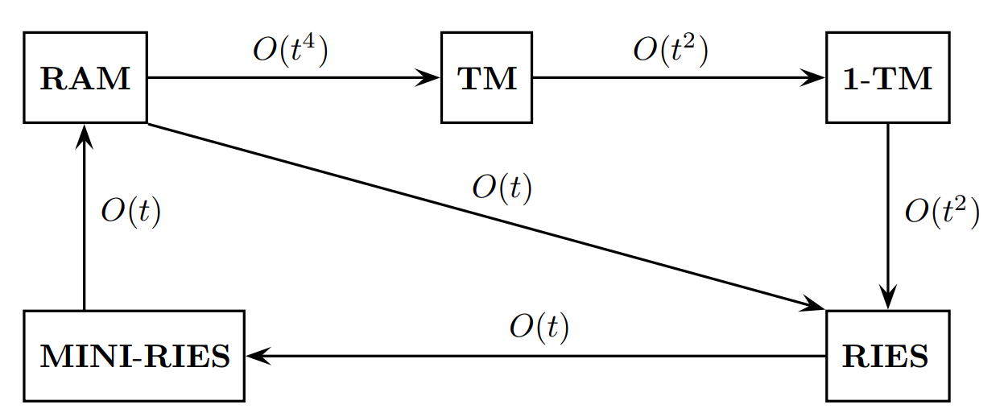
\(f\) ist durch eine RAM in Polynomialzeit berechenbar.
\(⇔\)
\(f\) ist in Julia in Polynomialzeit berechenbar.
\(⇔\)
\(f\) ist durch eine Turingmaschine in Polynomialzeit berechenbar.
\(⇔\)
\(f\) ist durch eine 1-Turingmaschine in Polynomialzeit berechenbar
⚠️ Es gibt Funktionen, zb. prod, die in einer 1-Turingmaschine nur in Polynomialzeit berechenbar sind, aber in einer RAM oder in Julia auch in linearer Zeit berechenbar sind.
\[ \textbf{FP} := \{f ∣ f \text{ ist eine in Polynomialzeit berechenbare Funktion}\} \]
\[ \textbf{P} := \{A ∣ A \text{ ist eine in Polynomialzeit entscheidbare Menge}\} \]
- Für alle Mengen \(A\) gilt \(A ∈ \textbf{P} \quad ⇔ \quad c_A ∈ \textbf{FP}\)
- sum, prod, md, div, exp \(∈ \textbf{FP}\)
- \(\textbf{FP}\) ist abgeschlossen unter Hintereinanderausführung und jedem Operator in \(\textbf{FP}\).
- \(\textbf{P}\) ist abgeschlossen unter Komplementbildung, Vereinigung, Durchschnitt.
Jeder Algorithmus der nur linear große for-schleifen benutzt, ist in Polynomialzeit berechenbar, da die Anzahl der Schritte durch ein Polynom beschränkt ist.
Die Klasse \(\textbf{NP}\)
Eine Menge \(A ⊆ Σ^*_1\) liegt genau dann in der Klasse \(\textbf{NP}\), wenn ein Polynom \(p\) und eine Menge \(B ∈ \textbf{P}\) existieren, sodass für alle \(x ∈ Σ^*_1\) gilt: \(x ∈ A ⟺ (∃y ∈ Σ^*_2)[|y| ≤ p(|x|) ∧ (x, y) ∈ B]\)
\[ \textbf{P} ⊆ \textbf{NP} ⊆ \textbf{EXP} ⊆ \textbf{NEXP} \]
Offene Fragen der Komplexitätstheorie
- \(\textbf{P} \stackrel{?}{⊊} \textbf{NP}\)
- \(\textbf{NP} \stackrel{?}{⊊} \textbf{EXP}\)
- \(\textbf{E} \stackrel{?}{⊊} \textbf{NE}\)
- \(\textbf{EXP} \stackrel{?}{⊊} \textbf{NEXP}\)
- \(\textbf{L} \stackrel{?}{⊊} \textbf{NL}\)
- \(\textbf{NL} \stackrel{?}{⊊} \textbf{LIN}\)
Wir wissen aber das \(\textbf{LIN} ≠ \textbf{NLIN}\).
Die Komplexitätsklassen werden durch die Laufzeit einer Turingmaschine definiert, die die Menge entscheidet.
- \(\textbf{L} = \mathcal{O}(log(n))\)
- \(\textbf{LIN} = \mathcal{O}(n)\)
- \(\textbf{P} = \mathcal{O}(n^c)\)
- \(\textbf{E} = \mathcal{O}(2^{cn})\)
- \(\textbf{EXP} = \mathcal{O}(2^{n^c})\)
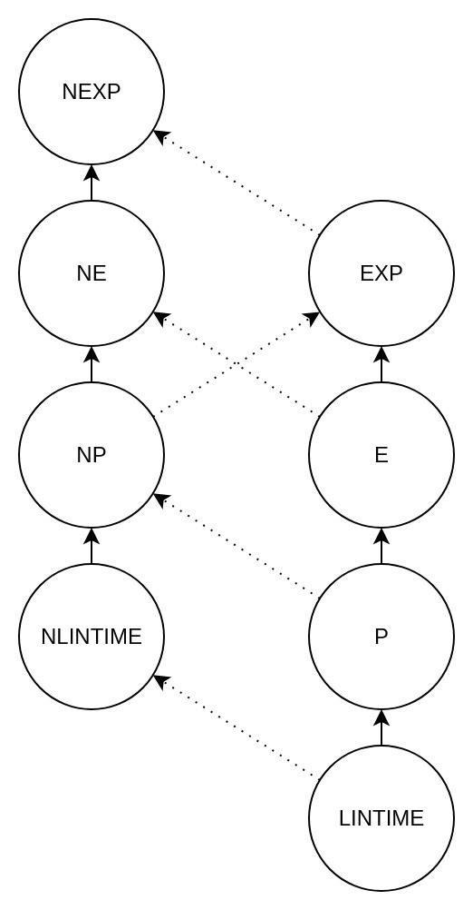
Mögliche Ergebnisse des \(\mathcal{P}\) vs \(\mathcal{NP}\) Problems:
- \(\textbf{P}=\textbf{NP}\)
- \(\textbf{P} \subsetneq \textbf{NP}\)
- \(\textbf{P} \stackrel{?}{=} \textbf{NP}\) ist ein gödelsches Problem, d.h. es kann weder bewiesen noch widerlegt werden.
- \(\textbf{P} \subsetneq \textbf{NP}\) ist unabhängig von den Axiomen der Mengenlehre, d.h. es ist selbst ein Axiom.

\(\textbf{NP}\)-vollständige Mengen
Sein \(A⊆Σ^*_1\) und \(B⊆Σ^*_2\) Mengen. Falls es eine totale Funktion \(f:Σ^*_1 → Σ^*_2\) mit \(f ∈ \textbf{FP}\) gibt \[ x ∈ A \quad ⟷ \quad f(x) ∈ B \] bzw. \[ C_A(x) = C_B(f(x)) \] gibt, so sagen wir: \(A\) ist in Polynomialzeit reduzierbar auf \(B\) bzw. \[ A ≤^p_m B \]
- Die Relation \(≤_m^p\) ist reflexiv und transitiv.
- Für alle Mengen \(A\) und \(B\) gilt: \(A ≤_m^p B \quad \Leftrightarrow \quad \overline{A} ≤_m^p \overline{B}\)
Definition: NP-vollständig
Eine Menge \(B\) heißt NP-vollständig, falls \(B ∈ NP\) und \(A ≤^p_m B\) für alle \(A ∈ \textbf{NP}\).
Anmerkung: Ein Algorithmus, der eine NP-vollständige Menge entscheidet, kann von einer Maschine mit der sich Programme beliebig parallelisieren lassen, in polynomieller Zeit entschieden werden.
Probleme in EXP-vollständig können hingegen nicht parallelisiert werden, und benötigen auch auf einer Maschine mit unendlich vielen Prozessoren exponentielle Zeit.
Definition: P-vollständig
Eine Menge \(B\) heißt P-vollständig, falls \(B ∈ P\) und \(A ≤^p_m B\) für alle \(A ∈ \textbf{P}\).
Anmerkung: Ein Algorithmus, der eine P-vollständige Menge entscheidet, ist nicht parallelisierbar, d.h. es gibt keinen Algorithmus, der die Menge in logarithmischer Zeit auf einer polynomiellen Anzahl von Prozessoren entscheidet.